St. Chrys’ Table: The Making of a Cookbook
Every year, some 200,000 new cookbooks are published; do we need another one? Yes, and I have put one at the top of my Christmas gift list! A pandemic–inspired community-building project, St. Chrys’ Table, is not only a handsome new addition to one’s kitchen bookshelf but a compilation of favorite recipes from some of Chicago’s best cooks. I admit my bias upfront: I was part of the creative team. When we started the project at the beginning of August 2020, we naively assumed we’d have our new cookbook ready for Mother’s Day 2021. How long could it take to pull together our favorite recipes? As we would painfully discover, it would take a lot longer than we ever imagined and demand our patience… and our kitchen sinks!
At the heart of the COVID lockdown, Janet Russo and Sherri Wick, parishioners at St. Chrysostom’s Episcopal Church at 1424 N. Dearborn Parkway, had an idea for pulling together members of the parish. Looking for tried and true recipes to prepare as the pandemic continued, they realized that the parish was a tremendous resource of good cooks. Why not tap the church community to create a cookbook!
Cookbook cover watercolor by Jonathan Boyer
It didn’t take long to gather a team of enthusiastic amateur (and one professional) cooks, including this author. Making a cookbook creates connections at a time so many were isolated, but it also could raise money for the church’s various feeding ministries. St Chrysostom’s has for many years prepared monthly free dinners for people in need. During the pandemic, parishioners have also been packing lunches for distribution to other churches and shelters. This new project would support the Women of Saint Chrysostom’s (WOSC – the unifying group of all parish women) outreach activities.
Donated lunches awaiting distribution
Key decisions made upfront ensured in retrospect that our deadlines were too optimistic. To keep costs low, we decided not to hire a professional cookbook consultant (yes, they exist). We’d tap both the parish and St. Chrysostom’s Day School (its pre-school founded in 1973) communities for recipes, ideally accompanied by personal stories. We would test all the recipes submitted. We would find handsome visuals to enhance the recipes. We’d keep production simple. Admirable goals, challenging to execute with volunteers.
When our call for recipes went out, my first decision was what to submit myself. My roasted cauliflower soup seemed perfect: simple, low in calories, and delicious. Basically, you puree a head of roasted cauliflower and leeks in water or stock, and you’re done. Add roasted butternut squash, broccoli, or asparagus for a lovely variation. I never used a recipe, but now I had to figure out exact, replicable measurements. The research was in order!
My second contribution was my husband’s favorite, Julia Child’s curry dinner, perfect for using up leftover turkey or other meats. (We would accept adaptions of published recipes, with appropriate credit.) I was sure I could streamline her detailed instructions.
We set an initial deadline for recipes of November 1. By mid-November, we had about half the recipes we hoped to get. Targeted phone calls helped, and we added personal favorites to round out the variety. We would still be accepting recipes the first week in January. Our publication deadline was already in jeopardy.
Testing had begun in October, ably organized by Sherri Wick and Isabel Carpenter. The committee tested each other’s recipes (even the professional cooks), but we needed to recruit more testers. We provided detailed instructions, including these
must-dos:
- ✓That every recipe is made at least once as written.
- ✓That the recipe is verified as working as written.
- ✓That we clean up any typos, misspellings, or missed steps/ingredients.
It was amazing to see how many issues our testers uncovered: an ingredient listed in the recipe, but not used in the instructions; measurements in grams that had to be translated into teaspoons and tablespoons for American cooks; imprecise cooking terms that needed precision and serving sizes that had to be adjusted. Deadlines, we realized, had to be flexible.
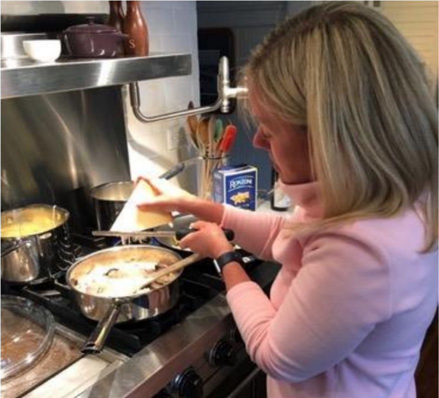
Samantha Schwalm perfects a recipe
We were fortunate to have one professional cook on the committee, Samantha Schwalm, personal chef and caterer (Paris Kabat Catering) a frequent contributor to this magazine. Not only did she contribute recipes, but also offered astute notes on our recipes. “One recipe was designed for a restaurant; it was way too elaborate and I was able to reformat it,” she said. “I really truly love learning about other people’s family recipes; it brings people together.”
Hours and days of testing occupied over 20 volunteers’ kitchens. Testers turned up many surprises, some humbling. My own confidently submitted soup recipe produced too thick a soup – it needed more liquid. My interpretation of Julia Child’s curry recipe required some clarification as well. In my own testing, I was pleasantly surprised by how much I liked a recipe for pasta with broccoli that on paper did not inspire. Committee Chair Janet Russo had similar revelations, “The testing process opened my eyes to recipes I wouldn’t have chosen on my own. Spinach Timbale with Honeyed Carrots and Potato Cake are now in my holiday repertoire.”
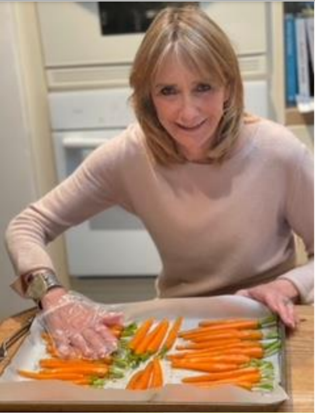
Committee Chair Janet Russo preps her carrots for roasting.
Part of the fun of testing was engaging families. Sherri Wick’s husband began to anticipate dinner in a new way, she reported, “I tested so many recipes that Larry would come to the dinner table each night and ask, “What recipe are you testing tonight?” The testing process proved particularly helpful to Liz Kohlbeck, who recalled, “Just about the time I hit a wall and had run out of my creative culinary juices, we began recipe testing for the cookbook! I started with Laurel Craven’s exceptional fall soup and continued on through at least a dozen more.”
Families were critical tasters for quality control; committee members’ children also learned new cooking skills. Lizzie Files, whose mother, Co-Chair McLaurin Files, was the committee’s data and recipe manager par excellence, sifted flour for the family’s favorite Lemon Ricotta Cake.
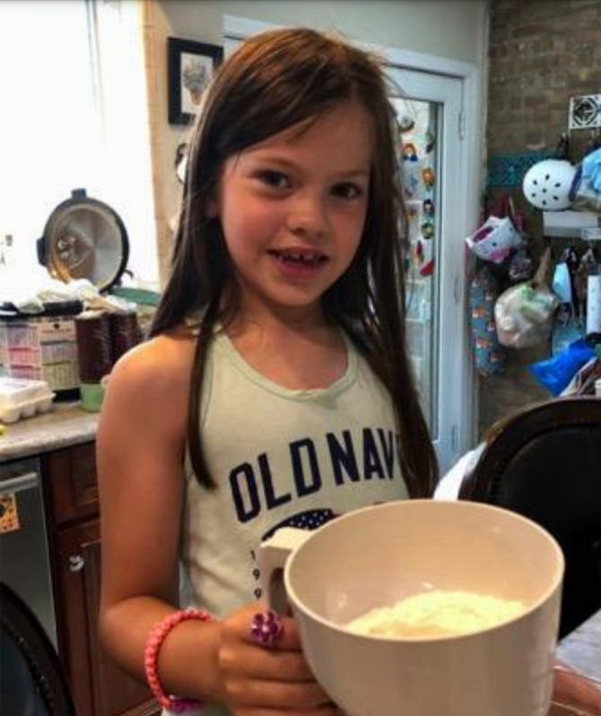 Lizzie Files, daughter of committee member |
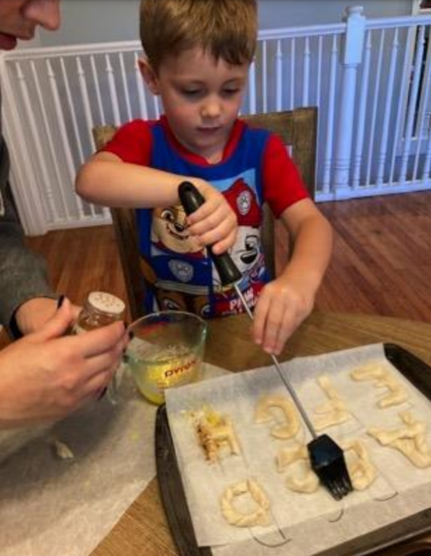 Scotty Marks, grandson of committee member |
Isobel Carpenter, who managed the cookbook’s marketing and communications, tested the Bananas Foster Banana Bread, which now she reports, is “my go[to recipe for banana bread.”
Committee member Pam Marks, a parish loyalist who contributed by Zoom from her family’s new home in North Carolina, contributed the Bananas Foster Banana Bread recipe and helped her grandson Scotty make Monogram Breadsticks. Marks was not the only committee member participating from afar. Others joined virtually from Santa Fe, an island north of Seattle, and Canada, enabling work to continue throughout the summer.
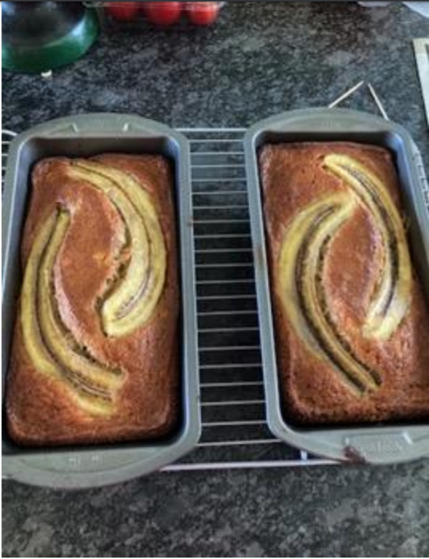 Pam Marks’ Banana Foster Banana Breadxxxxx x |
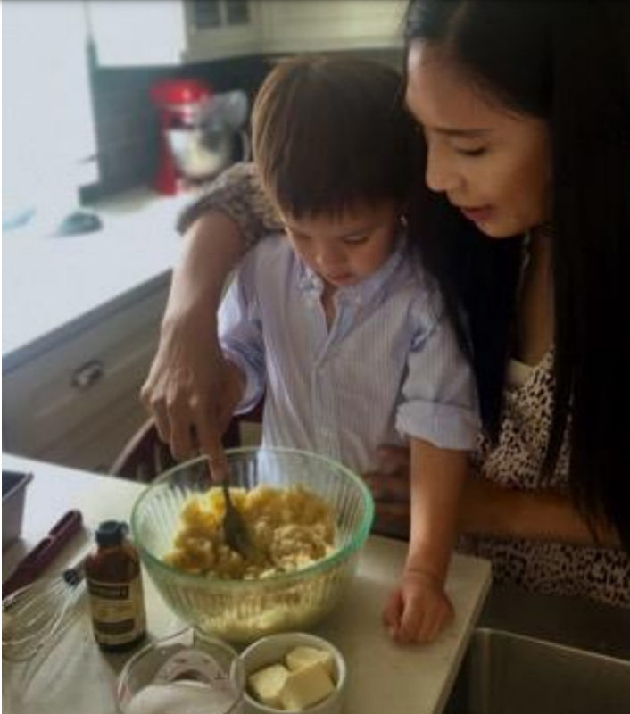 Isobel Carpenter helps her son William mix the batter for Bananas Foster Banana Bread. |
The committee had explored a plethora of publication options, from approaching a major cookbook publisher to printing copies at the church to offering an electronic-only version. Our best option proved to be working with a publisher who specialized in charity cookbooks called Fundcraft. We would offer both printed and electronic copies. While Fundcraft provided a step-by-step process for developing a cookbook, we still had dozens of decisions to make, being unwilling to pick a format from their list. How would we divide the recipes? Were cookies and bars also desserts or were they a separate category? Were soups part of a starter section or added to salads? Where should we put bread, salad dressing, and sauces? What fonts did we want to use? Who should have what credit?
Several committee meetings were devoted to the look and feel of our cookbook. Everyone brought piles of favorite cookbooks to Zoom meetings, leading to debates oversize, cover design, and color scheme. Color photography would have been prohibitively expensive. We considered black and white drawings but were delighted when architect and watercolorist Jonathan Boyer volunteered to help us. He had previously created beautiful images of the church, and we eagerly awaited his concepts for the book. We’d explored a wide variety of titles and with the decision to go with St Chrys’ Table, a place setting emerged as the perfect image for the cover. A tiny honeybee, the symbol of the church (St. John Chrysostom, a Byzantine bishop, was known as the honey-voiced orator) graced the center of the plate. Working with a committee of Type A personalities, Boyer wisely declined to debate design elements and patiently sought to incorporate our ideas without compromising his vision. He cleverly designed the back cover painting of the table setting transformed by the end of the meal.
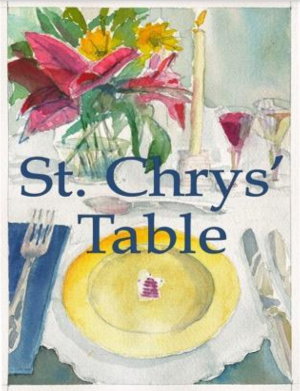 |
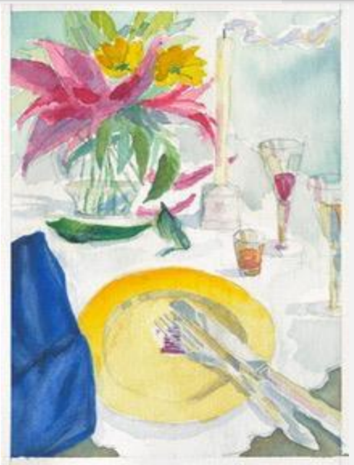 |
Front and back covers designed by Jonathan Boyer
Section dividers called for unique designs. Boyer’s images for everything from starters to desserts carried his elegant style throughout the cookbook. He also provided a handsome black and white drawing of the church for placement inside the front cover.
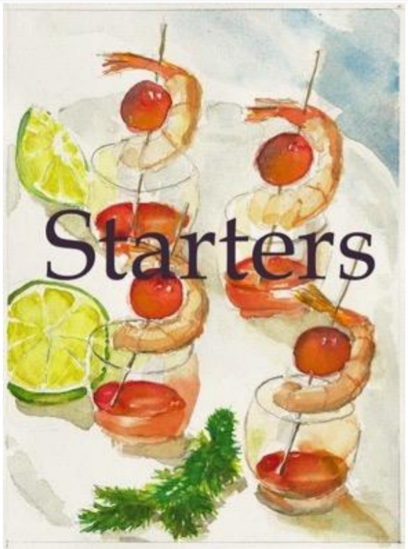 |
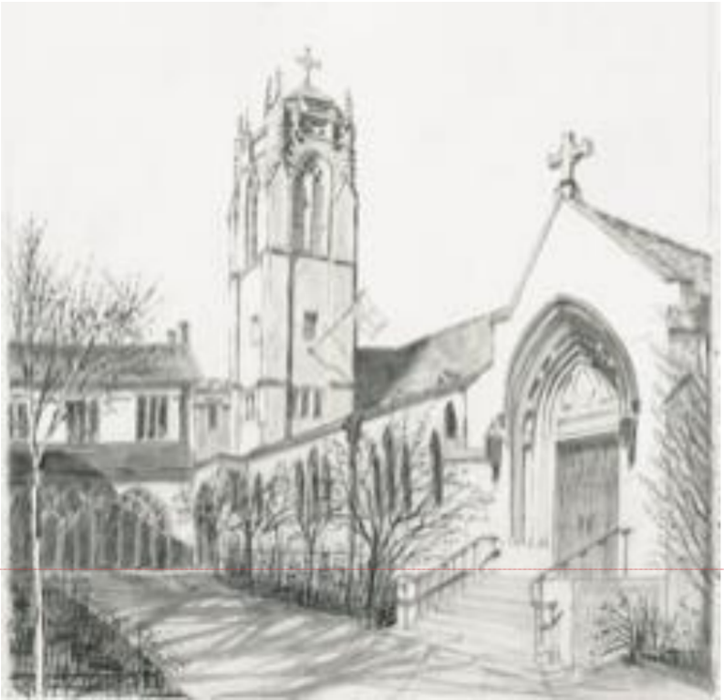
Still more issues remained to be resolved. We needed to balance the number of recipes in each category. How would we market the book? What would it cost? How would we layout the personal stories that came with many recipes?
Carolyn Cracraft, for example, provided this source for her Hungarian Goulash:
My mother started making goulash when we lived in Berlin in the early 1950s, encouraged by a Hungarian-born colleague of my father’s. He told her it needed a little sweetening and suggested a tablespoon of orange marmalade. When I was in Leningrad in 1972, I discovered at the Farmers’ Market that the Russian bouquet garni included a sliver of parsnip for the
sweetener.
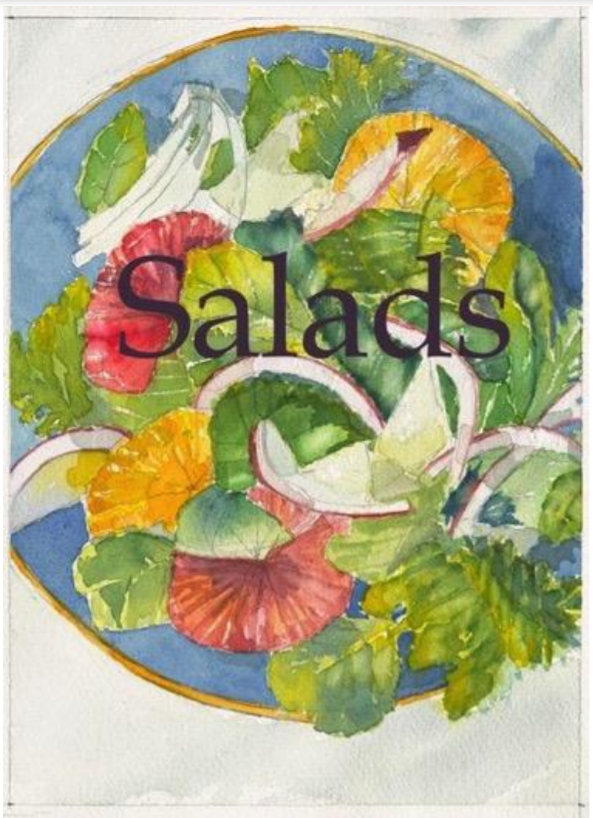
Judy Bross paid homage to the parish’s support of a mission in Chiapas, Mexico with Pork Pazole:
Our parish missioners to Chiapas feast on the native foods from freshly made tortillas to black beans cooked to perfection, native squashes in scrumptious soups, and the red pozole stew. We have adapted this pozole recipe from Ina Garten for a healthy toast to Chiapas and Nomasita’s, a favorite restaurant there.
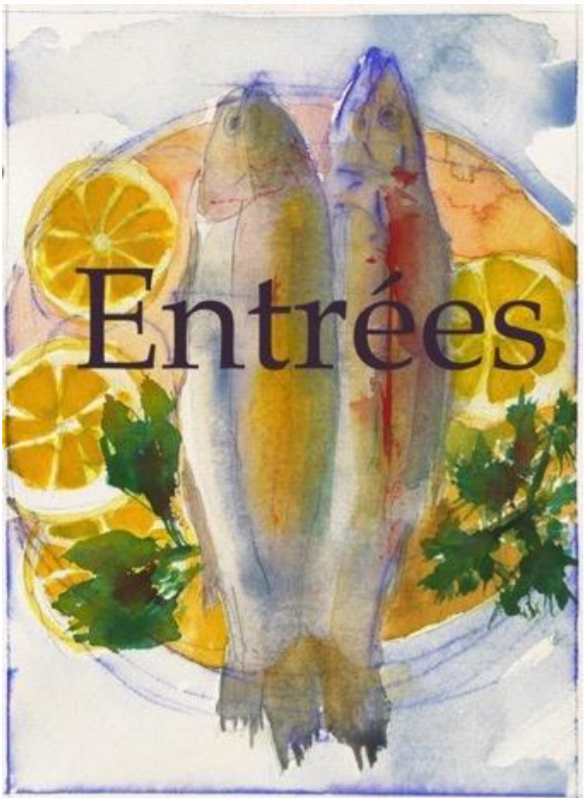
Leading us through working with Fundcraft, Files, our Data Manager – whose publishing background was invaluable – maintained the computerized records of all our recipes, testers notes, and graphics and helped us format the book.
We still had to prepare the text for the publisher. We decided to do our own proofreading. Once again, we had to extend the length of the process. We had quickly abandoned Mother’s Day as a completion goal. Fall 2021 now seemed possible, a good time to promote the book for Thanksgiving and Christmas. 12 volunteer proofreaders reviewed sections of the book twice before it was submitted to Fundcraft. Because a “cut and paste” option turned out not to exist, Files diligently re-entered every page into the Fundcraft software, requiring yet another round of proofreading.
Finally, long debates continued through the summer on the pricing. We wanted to make sure everyone could afford one, yet we wanted to support the church’s continuing feeding ministry and the Women of St. Chrysostom’s outreach efforts. We finally settled on $20 per book, with a $5 discount for the purchase of multiple copies. This would cover our costs and we hope to bring in enough to support our causes.
August came, we signed off on the final version, and held our collective breath until the books were delivered. Just in time for the church’s September “Welcome Back” celebration, the books arrived, and with great pride, we set up our bookstand in the church courtyard. Jonathan Boyer was on hand to autograph copies and the committee stood by with smiles on our faces. Sales were brisk at this first sales opportunity and the committee is hopeful of continuing to raise funds as the holidays approach.
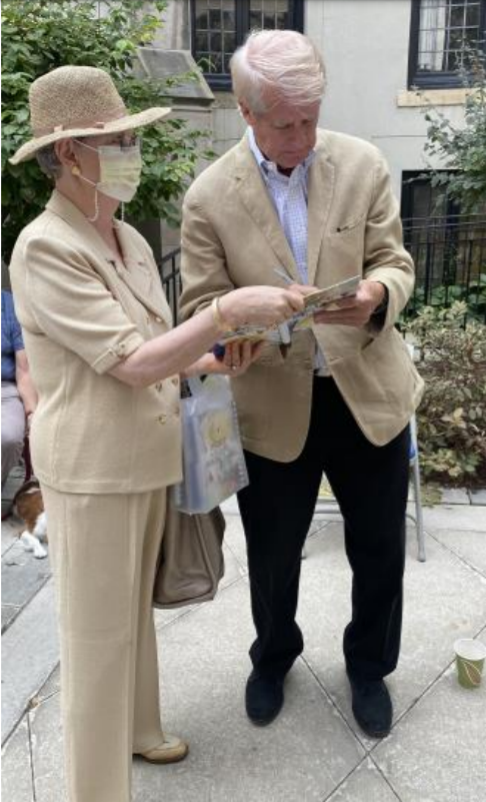
Jonathan Boyer autographs St. Chrys’ Table for Karen Meader
But best of all, the original goal of creating connections resonates. McLaurin Files summed up our collective feelings. “There were so many wonderful things about working on the cookbook, I was able to connect on a regular basis during such a strange time with some of my favorite people at church, but also meet new people with interesting backgrounds, talents and interests.” And as sales continue, WOSC will be able to add significantly to its community activities
For more information, please email the church office at info@saintc.org